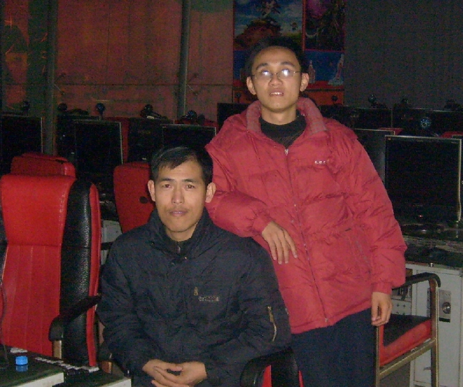

邂逅齐鲁连珠蓝剑－－有图有真相！
首页
江苏五子棋
#1 邂逅齐鲁连珠蓝剑－－有图有真相！ 作者：小丸.net 发表时间：2009-12-4 18:57:11
下午上QQ看到齐鲁连珠蓝剑给我发的消息，说他已经到了我所在的城市，我在ＱＱ上与他聊了以后发现他在汽车站附近一个网吧，于是我风尘仆仆的赶到那里，看到了期待了三天的蓝剑帅哥！
与其中＂帅哥＂来表达蓝剑，还不如用＂衰哥＂来表达比较合适一点！没有贬低的意思，因为我眼前的蓝剑，似乎有着一种生活的憔悴，或者说是一种生活的无奈，在交谈中，得知蓝兄弟是为了自己的事业而四处奔波，在下实在是敬佩万分．

网吧拍照的帅哥照相水平实在是不敢恭维
一起交谈了一下江苏五子棋与山东五子棋的发展状况，以后以后的打算，并且一致赞同：
发展现实五子棋才是王道
#2 Re:邂逅齐鲁连珠蓝剑－－有图有真相！ 作者：流浪者的梦 发表时间：2009-12-4 19:19:06
 网吧啊......
网吧啊......
#3 Re:邂逅齐鲁连珠蓝剑－－有图有真相！ 作者：wd1988 发表时间：2009-12-4 19:41:06
就冲他真敢去江苏实地考察，我就要顶蓝剑。网络上沽名钓誉之人不少，真个勇敢站出来的没几个
［ 白衣神童小剑魔 于 2009-12-11 19:09:58 时花20金币送鲜花一朵］
#4 Re:邂逅齐鲁连珠蓝剑－－有图有真相！ 作者：极地剑客 发表时间：2009-12-4 20:09:41
没看见MM~
#5 Re:邂逅齐鲁连珠蓝剑－－有图有真相！ 作者：裁决殿雪月 发表时间：2009-12-4 20:23:51
蓝剑 
#6 Re:邂逅齐鲁连珠蓝剑－－有图有真相！ 作者：忧郁的双眼 发表时间：2009-12-4 23:39:20
蓝贱GG好衰
#7 Re:邂逅齐鲁连珠蓝剑－－有图有真相！ 作者：大侠 发表时间：2009-12-5 20:58:19
原来如此，我都不知道有这事。。。。
#8 Re:邂逅齐鲁连珠蓝剑－－有图有真相！ 作者：聊城蓝剑 发表时间：2009-12-6 4:56:08
哎，我都没打扮就照上了一路风尘卜卜形象有点见成熟苍老，还是小康好看！
#9 Re:邂逅齐鲁连珠蓝剑－－有图有真相！ 作者：聊城蓝剑 发表时间：2009-12-6 5:13:54
在网络上寻找了半天把2008年的照片拿出来纠正下我的长相，要不那张我太可尘了
#10 Re:邂逅齐鲁连珠蓝剑－－有图有真相！ 作者：闫荣辉 发表时间：2009-12-6 8:39:25
像40岁的。
#11 Re:邂逅齐鲁连珠蓝剑－－有图有真相！ 作者：老黄 发表时间：2009-12-6 13:32:17
我十年前年轻的时候也跟蓝剑DD那么帅
#12 Re:邂逅齐鲁连珠蓝剑－－有图有真相！ 作者：下棋不靠谱 发表时间：2009-12-6 16:00:29
别跑了。来聊城我们下。 实战
实战 ［ 江湖狼踪 于 2009-12-6 16:07:34 时花20金币送鲜花一朵］
#13 Re:邂逅齐鲁连珠蓝剑－－有图有真相！ 作者：裁决殿雪月 发表时间：2009-12-6 17:04:24
蓝剑哥哥很能忽悠哈……
#14 Re:邂逅齐鲁连珠蓝剑－－有图有真相！ 作者：聊城蓝剑 发表时间：2009-12-8 11:42:53
大家好，本衰现在到了常州戚野宴区可有本地区下五子棋的朋友交流吗？
#15 Re:邂逅齐鲁连珠蓝剑－－有图有真相！ 作者：聊城蓝剑 发表时间：2009-12-8 11:49:17
12楼聊城老乡是那位？下棋不靠谱 请流下下联系方式我回到聊城联系你 |
|
|
|
#16 Re:邂逅齐鲁连珠蓝剑－－有图有真相！ 作者：心上人 发表时间：2009-12-19 16:40:23
发展现实五子棋才是王道
说的好
#17 Re:邂逅齐鲁连珠蓝剑－－有图有真相！ 作者：星月族 发表时间：2009-12-28 17:11:04
两位都是五子棋痴啊
#18 Re:邂逅齐鲁连珠蓝剑－－有图有真相！ 作者：小帮帮 发表时间：2009-12-29 1:10:10
谁有魄力全国游历五子棋道啊，智力运动会之后，各地都有了五子棋协会，这样联系和接待起来也方便！